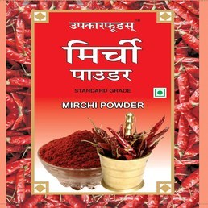
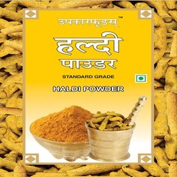
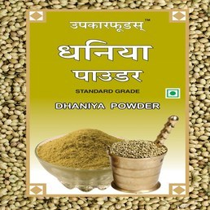

-

Upkar Foods Red Chilli Powder
Upkar Foods Red Chilli Powder is a unique, age old blend, processed from special varieties of colourful Indian red chillies. It is mild-hot and imparts glowing natural red colour to curried dishes making them attractive and more palatable.
Available in
100g
200g
500g
1Kg -

Upkar Foods Turmeric Powder
Upkar Foods Turmeric powder is a deep orange-yellow powder, processed from best quality freshly dried turmeric.It is commonly used as a flavouring and coloring agent in various cuisines, especially for curries.
Available in
100g
200g
500g
1Kg -

Upkar Foods Coriander Powder
Upkar Foods Coriander Powder is an aromatic powder, processed from dried coriander seeds. It imparts flavour and refreshing aroma to curried dishes making them more palatable.
Available in
100g
200g
500g
1Kg